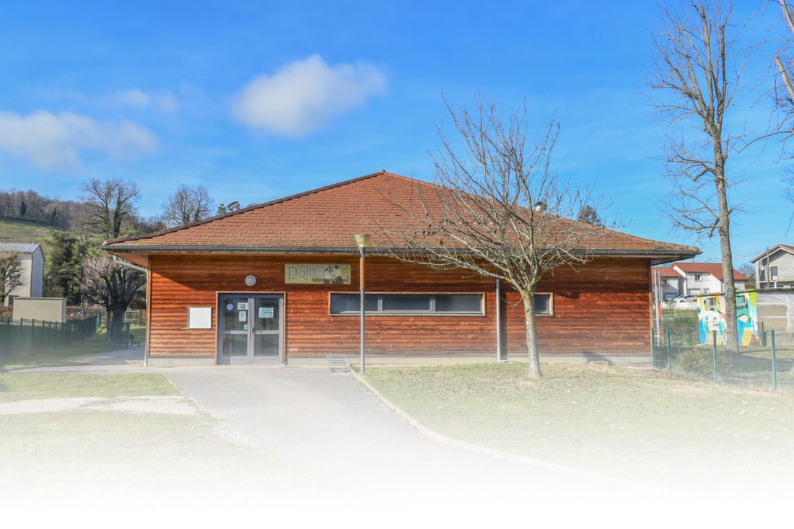

Jean-Pierre MILLON
Membre d'honneur et licencié au club- Champion de France juniors et senior
- Vice-champion d'Europe juniors
- Champion du monde universitaire et militaire
Notre histoire et nos chiffres

Le Judo Club du Lac permet aux jeunes et moins jeunes de découvrir un sport de combat complet : le judo.
En plus de former quelques champions aux niveaux régional et national, le club, ses enseignants et ses bénévoles ont permis à des milliers d'enfants et d'adultes de s'épanouir dans cette discipline qui enseigne avant tout le respect de l'adversaire malgré un engagement physique total.
Convivialité, amitié, sérieux et progression restent nos valeurs de base.
Saison 2025 / 2026
🏆 De nombreux podiums aux championnats départementaux et régionaux
Nos judokas viennent de tout le secteur, entre les Vals du Dauphiné et le Pays Voironnais.
★ Répartition indicative — saison 2026. Données anonymisées, aucun effectif précis n'est affiché.